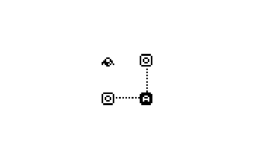
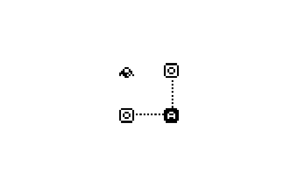

Porte was an experimental Bitsy game where you play as a robot unlocking portals by solving very simple logic gate puzzles.
EQ1–EQ1 3.60 3.60V
Porte was an experimental Bitsy game where you play as a robot unlocking portals by solving very simple logic gate puzzles.
